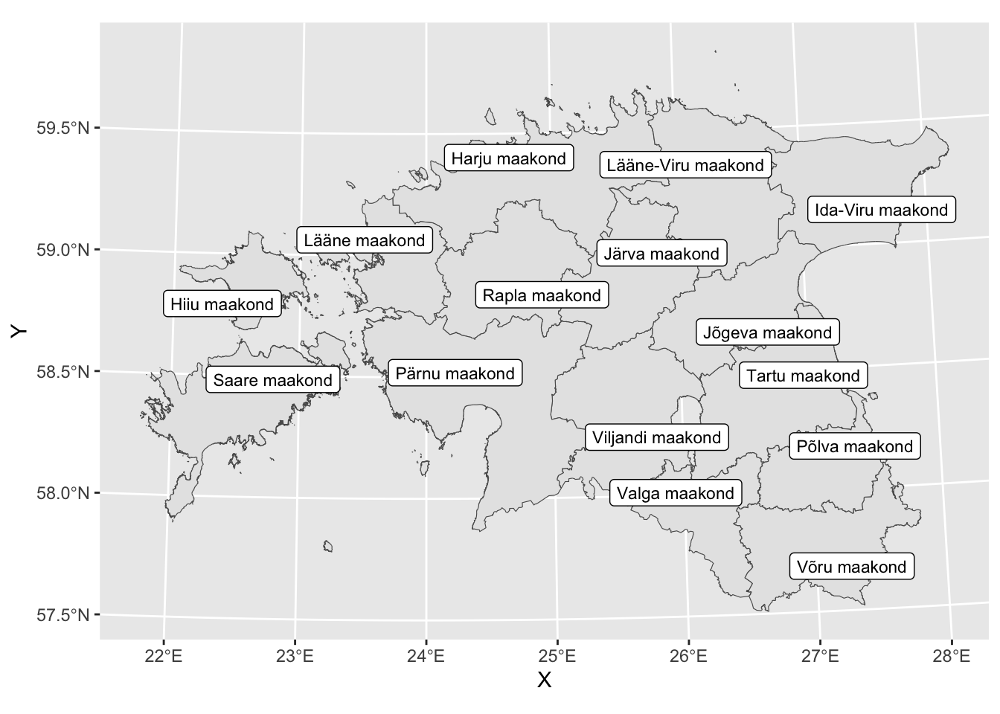

library(tidyverse)17 Ruumiandmed
See peatükk annab ülevaate, kuidas teha R-is Eesti kaarti. Andmetöötluseks kasutan pakketi tidyverse(Wickham et al. 2019).
Note
See peatükk on lõpuni kirjutamata. Täieneb.
17.1 Kaardi loomine paketi sf ja geoportaali avaandmete abil
Kaardi loomiseks kasutanenamasti simple features formaati ja paketti sf(Pebesma 2018). Mitmeid kasulikke ruumiandmeid saab avaandmetena kätte Maa- ja ruumiameti geoportaalist. Toon siin näite maakondade ja omavalitsuste tasandil, aga portaalist on võimalik alla laadida ka külad, linnaosad jne.
library("sf")sf andmed on esitatud tabeli kujul, kus üks tunnus on geometry. Tunnus geometry võib olla kujul POINT, LINE, POLYGON, MULTIPOINT, MULTILINE ja MULTIPOLYGON. Iga sf objekt sisaldab vaid ühte tüüpi geometry elemente.
Lae alla maakondade ja omavalitsuste andmed SHP formaadis Maa- ja ruumiameti geoportaalist. Tõsta lahtipakitud kataloogid oma projektikausta ja ära kustuta sellest kaustast ühtegi faili.
Andmestike kirjeldus asub samal lehel.
Andmete (see tähendab .shp faili) sisselugemine käib käsuga st_read(). Loen sisse andmed kaustast “maakond_shp” ja “omavalitsus_shp” ning salvestan need vastavalt “maakond” ja “vald” nimelisse objekti.
maakond<-st_read("maakond_shp/maakond.shp")Reading layer `maakond' from data source
`/Users/kristiloide/R-asjad/andmetuba_quatro/maakond_shp/maakond.shp'
using driver `ESRI Shapefile'
Simple feature collection with 15 features and 3 fields
Geometry type: MULTIPOLYGON
Dimension: XY
Bounding box: xmin: 369033.8 ymin: 6377141 xmax: 739152.8 ymax: 6634019
Projected CRS: Estonian Coordinate System of 1997vald<-st_read("omavalitsus_shp/omavalitsus.shp")Reading layer `omavalitsus' from data source
`/Users/kristiloide/R-asjad/andmetuba_quatro/omavalitsus_shp/omavalitsus.shp'
using driver `ESRI Shapefile'
Simple feature collection with 79 features and 6 fields
Geometry type: MULTIPOLYGON
Dimension: XY
Bounding box: xmin: 369033.8 ymin: 6377141 xmax: 739152.8 ymax: 6634019
Projected CRS: Estonian Coordinate System of 1997Vaatan objekti “maakond”. Vaikimisi kuvab esimesed 10 rida.
maakondSimple feature collection with 15 features and 3 fields
Geometry type: MULTIPOLYGON
Dimension: XY
Bounding box: xmin: 369033.8 ymin: 6377141 xmax: 739152.8 ymax: 6634019
Projected CRS: Estonian Coordinate System of 1997
First 10 features:
MNIMI MKOOD EKSPORT geometry
1 Saare maakond 0074 2025-03-01 MULTIPOLYGON (((456704.6 64...
2 Viljandi maakond 0084 2025-03-01 MULTIPOLYGON (((620926.9 64...
3 Hiiu maakond 0039 2025-03-01 MULTIPOLYGON (((418048.7 65...
4 Harju maakond 0037 2025-03-01 MULTIPOLYGON (((504776 6570...
5 Rapla maakond 0071 2025-03-01 MULTIPOLYGON (((504136.5 65...
6 Ida-Viru maakond 0045 2025-03-01 MULTIPOLYGON (((714923.3 65...
7 Valga maakond 0081 2025-03-01 MULTIPOLYGON (((622138.8 64...
8 Tartu maakond 0079 2025-03-01 MULTIPOLYGON (((702396 6476...
9 Võru maakond 0087 2025-03-01 MULTIPOLYGON (((714351.2 64...
10 Pärnu maakond 0068 2025-03-01 MULTIPOLYGON (((521030.7 64...Sisuliselt saab sellele andmetabelil teha kõiki operatsioone, mida saab teha “tavalise” andmetabeliga. Näiteks filtreerin välja need vallad, mis asuvad Saare maakonnas.
vald|>
filter(MNIMI== "Saare maakond")Simple feature collection with 3 features and 6 fields
Geometry type: MULTIPOLYGON
Dimension: XY
Bounding box: xmin: 369033.8 ymin: 6404447 xmax: 467746.5 ymax: 6505349
Projected CRS: Estonian Coordinate System of 1997
ONIMI OKOOD MNIMI MKOOD TYYP EKSPORT
1 Saaremaa vald 0714 Saare maakond 0074 1 2025-03-01
2 Ruhnu vald 0689 Saare maakond 0074 1 2025-03-01
3 Muhu vald 0478 Saare maakond 0074 1 2025-03-01
geometry
1 MULTIPOLYGON (((383803.2 64...
2 MULTIPOLYGON (((456704.6 64...
3 MULTIPOLYGON (((463402.3 64...Näha on, et Saare maakonnas asub kolm valda: Saaremaa, Ruhnu ja Muhu.
Kaardi loomine
Kaardi loomisel on vaja kasutada erinevaid kihte. Kui sa pole varem R-is jooniseid teinud, vaata peatükki Joonised ning tutvu ggplot loogikaga.
sf formaadis andmeid saab visualiseerida käsuga ggplot(), geomeetriana peab kasutama käsku geom_sf().
maakond|>
ggplot()+
geom_sf()Joonisele siltide lisamine ja ggrepel pakett
Käskude geom_sf_label() ja geom_sf_text() abil saab lisada kaardile teksti. Oletame, et soovin kuvada kaartidel maakonna nime.
maakond|>
ggplot()+
geom_sf()+
1 geom_sf_label(aes(label=MNIMI))- 1
- Lisab kaardile maakonna nime, tekst jääb musta raami valge taustaga
maakond|>
ggplot()+
geom_sf()+
1 geom_sf_text(aes(label=MNIMI))- 1
- Lisab kaardile maakonna nime ilma raami ja taustata.
Mõnikord on tekst siltide jaoks liiga pikk. Paketi ggrepel(Slowikowski 2024) abil on võimalik üpris mugavalt teksti asetada joonisele silte nii, et nad ei tule üksteise peale.
library(ggrepel)Esmalt loon käskude st_coordinates() ja st_centroid() abil maakonna koordinaatidest maakonna keskpunkti.
Vaata ka käsu st_centroid() kasutamist allpool toodud näites.
maakond_keskpunkt <- cbind(maakond, st_coordinates(st_centroid(maakond)))Warning: st_centroid assumes attributes are constant over geometriesSeejärel asetan käsu geom_label_repel abil joonise sildid maakonna keskpunktidele.
ggplot(maakond) +
geom_sf() +
geom_label_repel(data = maakond_keskpunkt,
aes(X, Y, label = MNIMI),
size = 3)
Oletame, et soovin sildid lisada vaid Hiiu ja Põlva maakonnale. Esmalt on vaja valmis joonistada kaart, seejärel lisada sildid ja siltide lisamisel kasutada filter() käsku, et piirata joonisele kuvatavaid andmeid.
Teemade kasutamine kaartidel
Kaardi lõppu tuleb lisada +theme_*. Teemad on:
theme_gray()theme_bw()theme_linedraw()theme_light()theme_dark()theme_minimal()theme_classic()theme_void()- sobib kasutada, kui ei ole soov kasutada kooridnaate taustaltheme_test()
maakond|>
ggplot()+
geom_sf()+
theme_void()vald|>
filter(MNIMI=="Tartu maakond")|>
ggplot()+
geom_sf()+
theme_void()Oma andmete lisamine kaardile
Kasutan näites loomuliku iive näitajat maakonna kohta. Andmed on võetud statistikaameti tabelist RV030. Mul on andmestikus kaks tunnust, maakonnad ja iive.
iive<-read_csv2("loomulik_iive.csv")iive|>
head(3)# A tibble: 3 × 2
maakond loomulik_iive
<chr> <dbl>
1 Harju maakond -653
2 Hiiu maakond -68
3 Ida-Viru maakond -1448Oma andmestik tuleb liita alati sf objekti külge ja mitte vastupidi. Kasuta liitmisel veergude nimesid, mis on sf objekti küljes.
- 1
- Teen andmestikust “iive” uue objekti “andmed”
- 2
- Seejärel muudan veeru nime “maakond” ja uus nimi on “MNIMI”, sest nii on see “maakond” objektis
- 3
- Seejärel liidan sf objekti maakond andmetele juurde
Joining with `by = join_by(MNIMI)`Liidetud andmestik näeb välja nüüd nii. Lisandunud on nüüd MKOOD, EKSPORT ja geometry tunnused.
andmed|>
head(3)# A tibble: 3 × 5
MNIMI loomulik_iive MKOOD EKSPORT geometry
<chr> <dbl> <chr> <date> <MULTIPOLYGON [m]>
1 Harju maakond -653 0037 2025-03-01 (((504776 6570563, 504787.5 6…
2 Hiiu maakond -68 0039 2025-03-01 (((418048.7 6506295, 418045.4…
3 Ida-Viru maakond -1448 0045 2025-03-01 (((714923.3 6544236, 714913.9…Kuvan kaardile loomuliku iive näitajad maakonnas.
andmed|>
ggplot()+
geom_sf(aes(geometry=geometry, fill=loomulik_iive))+
geom_sf_text(aes(geometry=geometry, label=loomulik_iive))+
theme_void()Värvide kujundamine kaardil
Käsuga scale_fill_fermenter() saan muuta maakondade värve vastavalt loomulik_iive väärtusele. typ="seq" saab panna ka “qual” (qualitative) või “div” (diverging).
Teen sama kaardi, aga kasutan kahel erienval moel teksti maakonna keskpunktile panemist. Siin kaardil kasutan st_centroid() käsku geom_sf_text() käsu sees.
andmed |>
ggplot() +
geom_sf(aes(geometry = geometry, fill = loomulik_iive)) +
geom_sf_text(
data = andmed |> mutate(geometry = st_centroid(geometry)), #<1> keskpunktid tekstile
aes(geometry = geometry, label = loomulik_iive),
size = 3
) +
scale_fill_fermenter(type = "seq") +
theme_void()Siin aga teen esmalt eraldi andmestiku tekstikohad ning joonist tehes kasutan korraga nii andmestikku “andmed” kui “tekstikohad”.
tekstikohad <- andmed |>
mutate(geometry = st_centroid(geometry))
ggplot() +
geom_sf(data = andmed, aes(geometry = geometry, fill = loomulik_iive)) +
geom_sf_text(data = tekstikohad, aes(geometry = geometry, label = loomulik_iive), size = 3) +
scale_fill_fermenter(type = "qual") +
theme_void()Warning: Using a discrete colour palette in a binned scale
ℹ Consider using `type = "seq"` or `type = "div"` instead